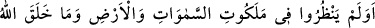
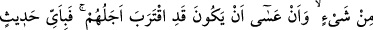
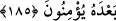

“O, ancak apaçık bir uyarıcıdır.” Yani Hz. Muhammed (s.a.v.), insanlara karşı olan
rahmet ve merhametinin yüceliğini göstermek ve kıyamet günü Allah’a kolayca özür
beyanında bulunmak için gayet açık uyarıda bulunan ve bunda ileri giden bir
peygamberdir.
185. Göklerin ve yerin hükümranlığına, Allah’ın yarattığı her şeye ve ecellerinin
yaklaşmış olabileceğine bakmadılar mı? O halde Kur’an’dan sonra hangi söze
inanacaklar?
“Göklerin ve yerin melekûtuna,” göklerin ve yerin delâlet ettiği mülkün büyüklüğüne
ve bunu yapan kudretin kemâline bakmadılar mı? Eğer bakıp düşünselerdi Allah’ın
onları boşa yaratmadığını ve kullarını başıboş bırakmadığını bilirlerdi.
Bazıları göklerin melekûtunun yıldızlar, güneş ve ay; yerin melekûtunun ise denizler,
dağlar ve ağaçlar olduğunu söylemiştir. “Melekût”, büyük mülk demektir.
“Allah’ın yarattığı” sayıya gelmez büyük küçük “her şeye” bakmadılar mı? Yani
varlıklardan her bir ferd, bakmak, düşünmek, ibret almak, Yaradan’a ve O’nun
vahdâniyetine istidlal için mahaldir, yeterlidir. Nitekim şiirde şöyle denilmiştir:
Her şeyde O’na ayet ve delil var
O’nun bir olduğuna delâlet eder
“ve ecellerinin yaklaşmış olabileceğine bakmadılar mı?” düşünmek ve istidlalde
bulunmak üzere bakmadılar ve onları yalanladılar mı?
Yine onlar ecellerinin yaklaşmış olabileceğine ve yakın bir zamanda hemen
ölebileceklerine bakmadılar mı? Onlara ne oluyor ki ölüm gelmeden ve azap inmeden
önce Hakk’a dönmez ve kendilerini kurtaracak hakikate yönelmezler?
Ecel yetişmeden hemen önce
Zaman pençeden dizgini almadan önce
Kendi düşünce binitine eğer koy
Din yoluna mertçe gir
“O halde bundan” yani Kur’an’dan “sonra hangi söze inanacaklar?” Yani,
beyandaki güzellik bakımından son noktada olan ve kendisinden sonra ne indirilen bir
kitap ne de gönderilen bir peygamber bulunmayan Kur’an’a inanmadıkları takdirde
başka hangi söze inanacaklar? Bu ayet-i kerime onların inanma ihtimallerinin